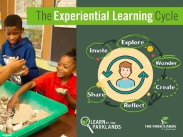

There is so much to learn at The Parklands Outdoor Classroom, but we hope you continue your learning long after you leave the parks with The Parklands Virtual Classroom. This online learning environment includes videos, activities, games, and other resources to keep you connected to our parks until your next visit.
Resources are organized by field trip topic and are available for teachers, students and families. Suggested grade levels for each activity correspond to Next Generation Science Standards — however, learners of all ages are encouraged to participate. We will be adding more content, so check back often.
*No printer? No problem! Use the resources below as a guide and answer on your own paper.
Air and Weather
Investigate the climate and weather of The Parklands of Floyds Fork and the Temperate Deciduous Forest. Learn about our place on the globe and the reason behind seasonal change.
Check out the video below to learn more about patterns in the sky.
1st Grade Air Pressure Math Worksheet
1st Grade Temperature Math Worksheet
Animals and Their Environment
Explore animal structure and function, their adaptations and behaviors, and discover the importance of their interdependence with the environment in which they live. But, first, we need to know what things all animals need to survive. Watch the video below to find out.
Birds of prey
Watch the video below and use this worksheet as your guide to learn more about birds of prey and animal adaptations. (Grades K-4)
Animal engineers
Animals and their adaptations make for excellent engineers. Watch the video below to learn more about some of our most industrious critters.
The biodiversity of life
Use the Diversity of Life Worksheet as your guide as you watch the video below to discover more about biodiversity in The Parklands. (Grades K-4)
Bald Eagle Reading Worksheet (Grades 3-5)
Nature Detective Activity (All Ages)
Neighborhood Nature Activity (All Ages)
Decomposers in your backyard
Watch the video below to learn about decomposers and how you can find some in your own backyard.
Fungus Among Us
Speaking of decomposers..check out the video below to learn more about the incredible world of fungus.
Straight up traits
Ever wonder why animals and plants have different traits and characteristics? Watch the video below to learn more. (Grades 3 and up)
Climate change and animals
To learn more about how a changing environment affects animals, check out the video below.
Animal daycare and night care
Do you ever wonder how animals care for their babies? Watch the video below to find out.
Earth Materials
Investigate different rock types and fossils, explore composition of materials, explore the rock cycle, and investigate Kentucky geologic history.
Ever wonder how features on the earth like mountains and valleys change shape? Watch the video below to learn more about how our land is shaped. (Grades 2 and up)
A 2nd-grade lesson in earth materials
Use the K-2nd Grade Earth Materials Worksheet as your guide while watching this video lesson.
K-2nd Grade Earth Materials Worksheet
1st Grade Erosion Math Worksheet
2nd Grade Erosion Math Worksheet
A 4th-grade lesson in earth materials.
Use the 4th Grade Earth Materials Worksheet as your guide while watching this video lesson.
Natural Engineers
Nature has produced some amazing engineers. A nest of ants can move a ton of soil a year building their tunnels. While a 10 lb. bald eagle can construct a platform nest in a tree as big as a bathtub. Come investigate Nature’s industrious engineers.
Plants
Explore the plants of Kenctucky! Learn about plant life cycles, the structures of plants and forests, and why plants are essential to humans and wildlife!
Follow along with the video lesson using this Plants Worksheet. (Grades K-2)
1st Grade Oak Tree Math Worksheet
2nd Grade Math Oak Tree Worksheet
Plant structure
To learn more about the structure and function of plants, check out the video below.
Have seeds. Will travel.
To learn more about how plants disperser their seeds, check out the video below.
Science of Sound
Explore your sense of sound to better understand the world around you. Use natural soundscapes near your home to study concepts of sound, such as wavelength, frequency and amplitude. Learn the importance of sound in predator / prey relationships and how it can help study biodiversity in an area.
Use the activities below to learn more about sound after watching the video lesson.
Why Do Animals Make Sounds? (All Ages)
How Does Sound Move? (Grades 1-4)
Sunshine and Shadows
Explore the formation of shadows and investigate interactions between the sun, moon and earth. Learn about the properties of light and the sun’s importance to the Floyd’s Fork ecosystem.
Watch the video below to learn about our seasons. (All Ages)
World of Water
Water is essential to all life on earth. Come investigate Floyds Fork- the creek that makes The Parklands unique!
Learn more about the Floyds Fork watershed by watching the video below. (Grades 3 and up)
DIY Watershed
Take a look below to learn how to make your own watershed at home.
World of water
Watch the video lesson below and then dig deeper into the world of water using these water worksheets. (Grades 4-8)
Wednesday Wonders
Wednesday Wonders are interactive programs designed to spark the curiosity of young children. Each week, we’ll explore a new science wonder with a story, craft, hike or related science experiment. (PreK, All Ages)
Crafts with a Ranger
Nature and art go hand in hand. Feeling crafty? Check out the videos below to learn how you can make your own amazing nature craft with regular household items! (All Ages)
Parklands Trailers
Are you ready to come explore The Parklands? Check out the “Trailer” videos below to find the right trail for your next adventure! (All Ages)
Science Shorts
Ever wonder how plants get their energry? Or what that lobster looking things in Floyds Fork is? Check out these bite sized science lessons to learn more about The Parklands.
Experiential Learning Tools

Below is an outline of this six-step experiential education model that can be used to inspire learning of the most significance—forming a vital connection between content and world. (All Ages)